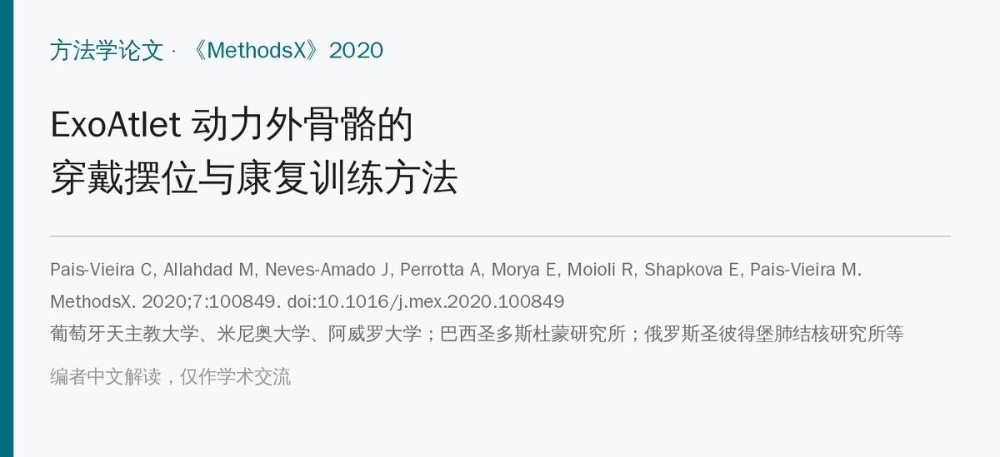
🔖原文信息（编者中文重排）
📚 文献信息
▪ Pais-Vieira C, Allahdad M, Neves-Amado J, Perrotta A, Morya E, Moioli R, Shapkova E, Pais-Vieira M. Method for positioning and rehabilitation training with the ExoAtlet® powered exoskeleton. MethodsX. 2020;7:100849. doi:10.1016/j.mex.2020.100849
▪ 作者单位：葡萄牙天主教大学、米尼奥大学、阿威罗大学；巴西圣多斯杜蒙研究所、北大河州联邦大学；俄罗斯圣彼得堡肺结核研究所脊柱中心、圣彼得堡国立大学
▪ 文章类型：方法学论文（操作步骤＋1 名健康受试者和 1 名脊髓损伤患者的示范数据）
下肢动力外骨骼越来越多地用于脊髓损伤、脑卒中、多发性硬化等患者的步行康复。但外骨骼又重又贵，穿戴步骤多，任何一步出错都可能导致摔倒、低血压、皮肤压伤。
厂家说明书往往只讲机器怎么用，很少讲治疗师和患者具体该怎么配合。这篇论文以俄罗斯的 ExoAtlet® 外骨骼为例，把从充电到脱下的全过程拆成 13 个步骤，再加上紧急停止、肌肉痉挛、同步脑电记录、开门等特殊情况的处理。换成别的品牌外骨骼，大部分原则也适用。
• 体型要求（ExoAtlet）：体重 <100 kg；身高 1.60～1.90 m；股骨长 37～49 cm；髋宽 ≤46 cm
• 上肢和躯干：要能握住助行器或拐杖维持平衡，肩、躯干、上下肢有足够的活动范围；体内有植入物的患者，只要不干扰外骨骼也可以用
• 不适合：严重认知障碍、骨质疏松、皮肤破损、直立性低血压等可能成为禁忌
• 器材：外骨骼（含平板/笔记本软件）、鞋拔、平底鞋、软尺、可调高度的琴凳；可选平行杠、移位吊架和吊带、拐杖、助行器、跑台
• 人员：1～2 名物理治疗师（或其他专业人员）＋1 名患者；早期最好 2 名治疗师，一人在后、一人在侧前方，其中一人负责操作软件
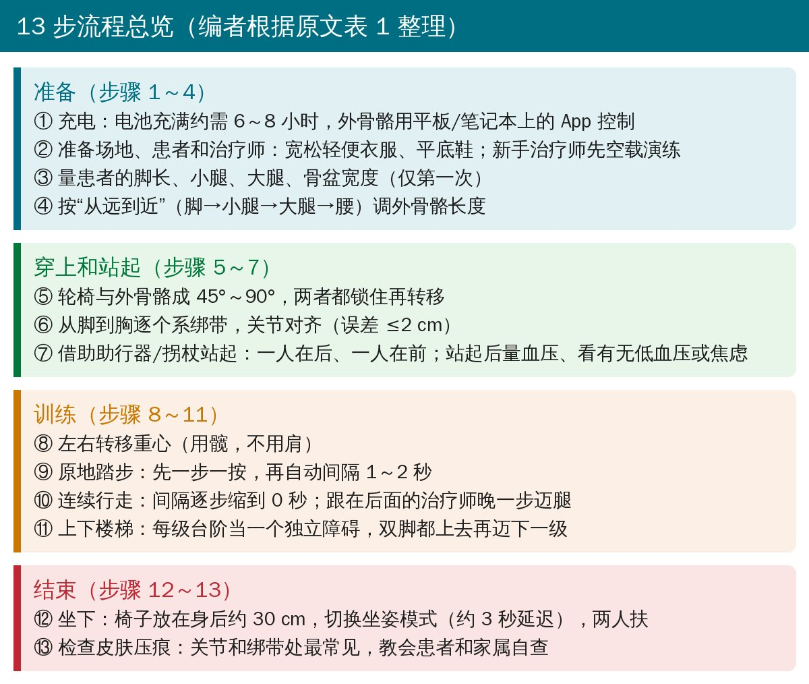
🔖13 步流程总览（编者根据原文表 1 整理）
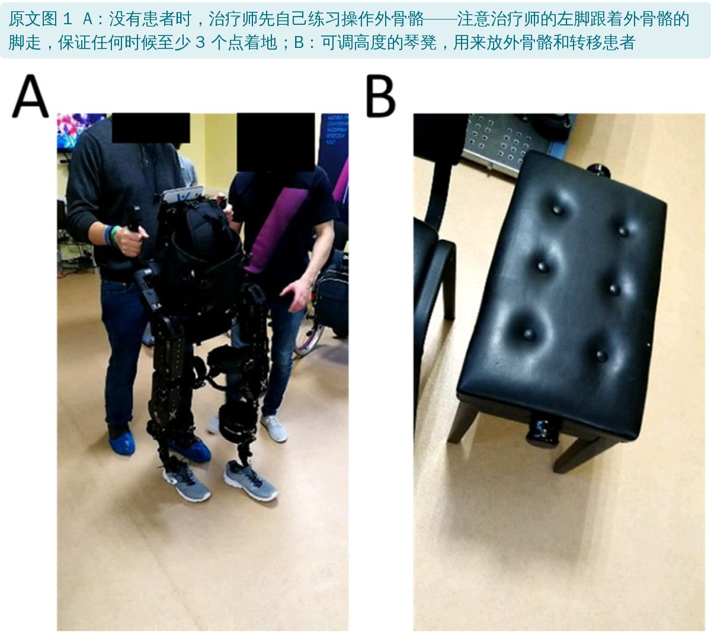
🔖原文图 1：治疗师先空载演练
• 第一次接触外骨骼的治疗师，要先在没有患者的情况下把所有步骤自己做一遍；患者第一次穿时也照此做，能降低双方的焦虑
• 衣服：外骨骼贴身，穿轻薄衣服，避免牛仔裤和有松垮带子的衣服；有的型号需要平底鞋
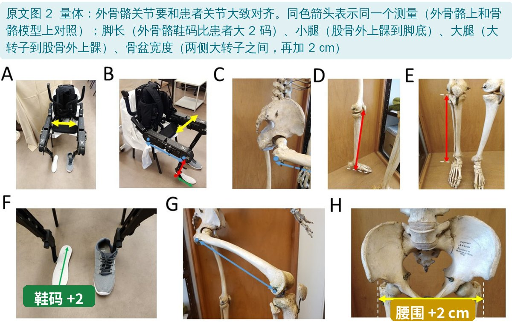
🔖原文图 2：需要测量的 4 个部位
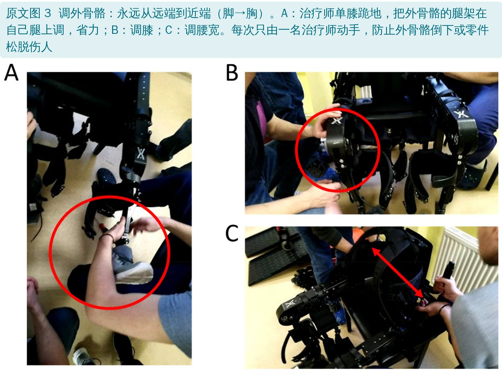
🔖原文图 3：调外骨骼从远到近
• 调长度时从脚往上调；调节螺丝别拧太紧，以免损伤小零件
• 调大腿长度时顺便调琴凳高度：凳子略高于膝，让外骨骼的膝角在 90°～110°，方便从轮椅转移
• 开机但先不启动训练程序；确认软件连的是你这台外骨骼（房间里可能有好几台）；录入患者编号和训练方案
• 开机后关节会锁住，转移时外骨骼不会动，可以当作额外的支撑；运行“重新对位”功能后，所有绑带和锁扣再检查一遍
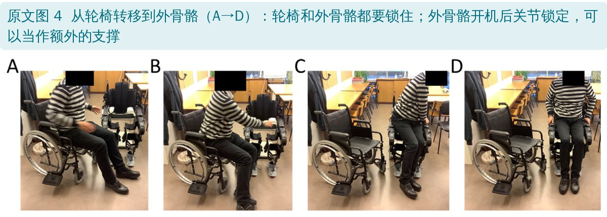
🔖原文图 4：从轮椅转移到外骨骼
• 轮椅与外骨骼成 45°～90° 摆放，两者都锁住；外骨骼不能从坐位起始的，可以用吊带防跌倒
• 先把脚放进外骨骼的鞋里（可用鞋拔），脚趾保持解剖位置
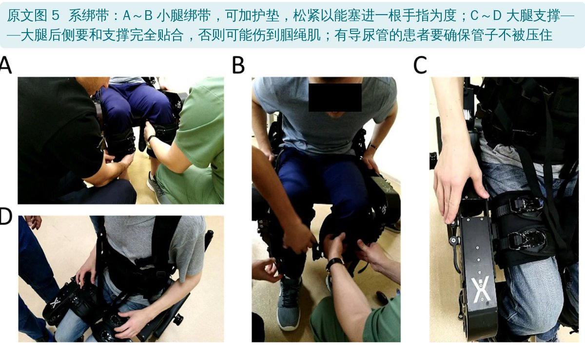
🔖原文图 5：系小腿和大腿绑带
• 绑带松紧：能塞进一根手指，但不费力
• 大腿支撑：大腿后侧必须和支撑完全贴合，否则可能伤到腘绳肌；大腿绑带是皮肤受力最大的地方，要加护垫，并确认导尿管等没被压住
• 手臂绑带先插上不收紧；有一侧手臂感觉异常的，先穿这一侧
• 腹部/胸部绑带先系下面再系上面，给腹部留出空间
• 对照患者的关节和外骨骼的关节，相差 2 cm 以内可以接受；所有松开的带头收好，确认手不会碰到运动部件
• 患者太焦虑就先脱下来，下次再试
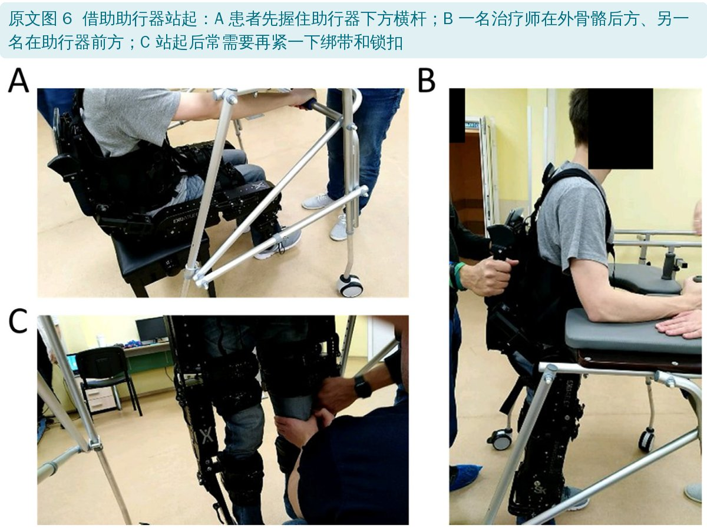
🔖原文图 6：借助助行器站起
• 站起分两步：先把脚往后收，再随外骨骼升起伸直腿
• 一定要有支撑物：助行器、拐杖或固定平行杠，外骨骼不能在没有支撑的情况下使用；状态好的患者后期可以独立用拐杖，拐杖手柄上还可以装控制按钮（“智能拐杖”）
• 站起时三件事同时发生：患者握住支撑物；一名治疗师在后面防止患者向后倒（大多数外骨骼的电池和电脑都在背后）；另一名在前面
• 站稳后再紧一次绑带，问患者的感觉；看有没有低血压或焦虑的迹象，必要时坐下，改天再练
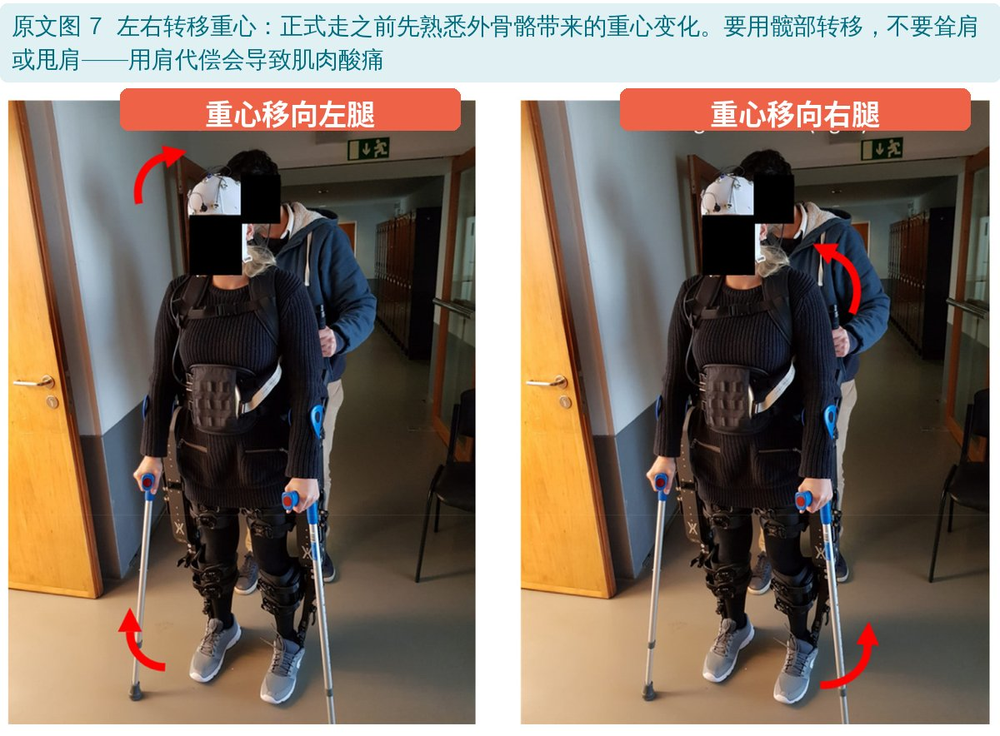
🔖原文图 7：左右转移重心
• 先练转移重心：上身前倾熟悉新的重心，再左右来回转移，可以扶双拐、治疗师在后面帮忙；这是之后所有步行的基础
• 用髋转移，不用肩：用肩代偿会导致肌肉酸痛
• 其他可选练习：侧向转移重心、适应背后电池的重量、只扶一支拐杖保持平衡 1 分钟
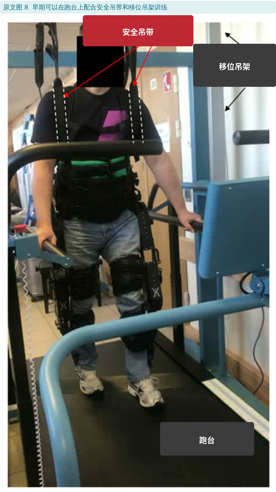
🔖原文图 8：跑台＋安全吊带
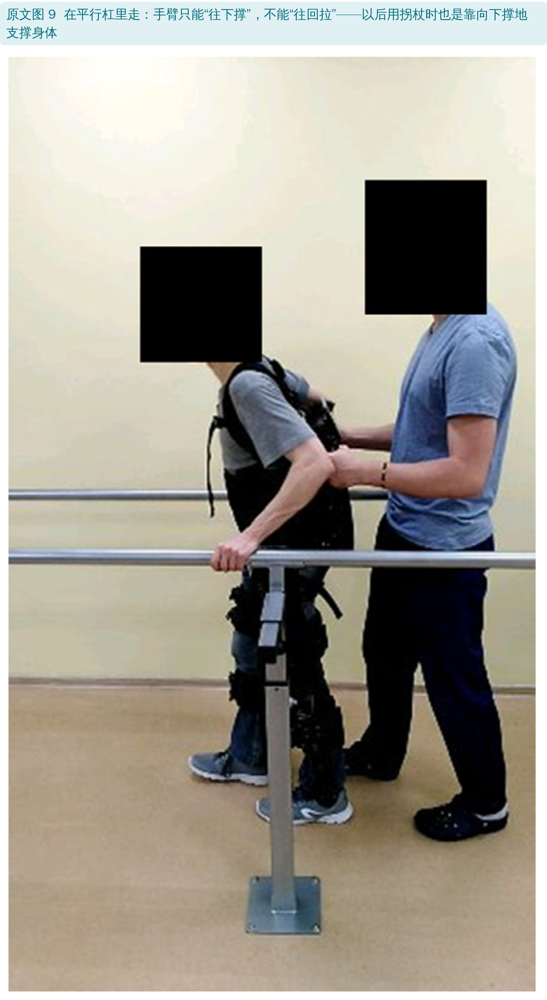
🔖原文图 9：平行杠里行走
• 步行三阶段：一步一按的分步模式 → 自动连续但每步间隔 1～2 秒 → 间隔 0 秒的连续模式；中间还可以调步长、抬腿高度
• 总是从同一侧开始（比如左腿），并提前告诉患者“几秒后开始动”；不要在这时跟患者聊无关的话
• 迈左腿前，后面的治疗师先帮患者把重心移到右侧；迈右腿时反过来
• 平行杠里只能往下撑，不能往回拉——以后用拐杖也是往下撑地
• 早期患者总盯着自己的腿，要提醒抬头看前方
• 连续行走时，后面的治疗师要比外骨骼晚一步迈腿：外骨骼抬脚时治疗师双脚着地，保证任何时候人机合计有 3 个点着地
• 作者经验：如果患者身体条件好、治疗师有经验，第一次就可以直接用拐杖，患者成就感更强
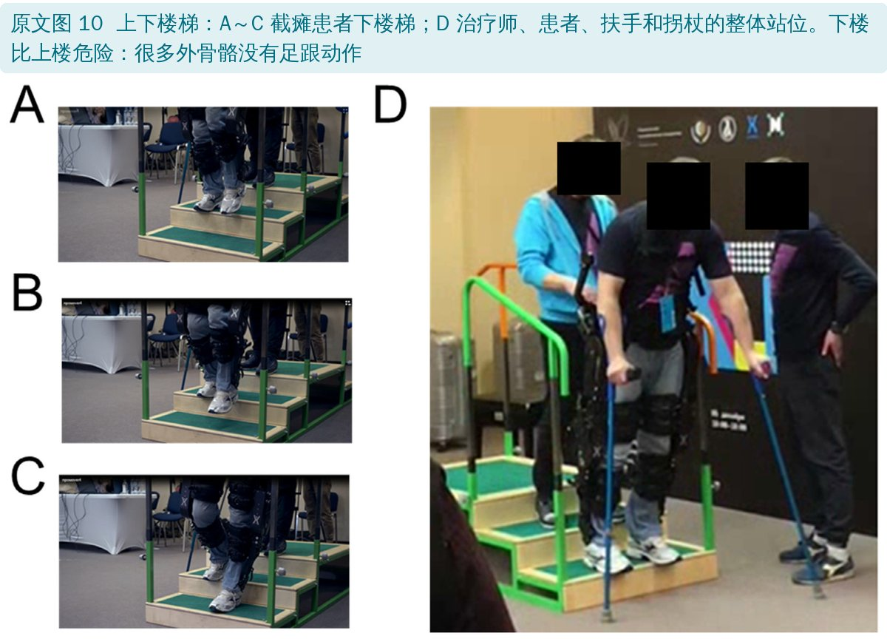
🔖原文图 10：上下楼梯
• 只有患者和治疗师都熟练掌握前面所有步骤之后才练
• 先量台阶高度，确认外骨骼的脚放得下；在软件里设好爬楼参数，提前说好先迈哪只脚
• 每级台阶当作一个独立障碍：双脚都上去再迈下一级；一般不建议用连续模式爬楼
• 下楼比上楼更危险：很多外骨骼没有足跟动作，上下楼参数也可能不同
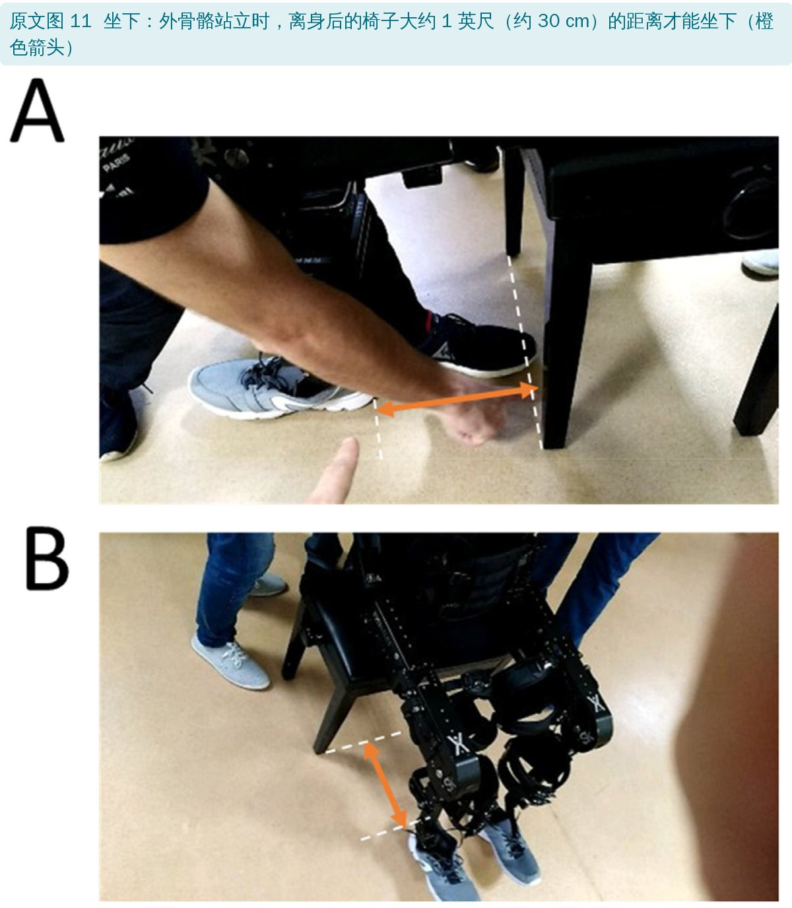
🔖原文图 11：坐下前的距离
• 琴凳放在患者身后，外骨骼切换到坐姿模式（约 3 秒延迟），一般需要两名治疗师扶
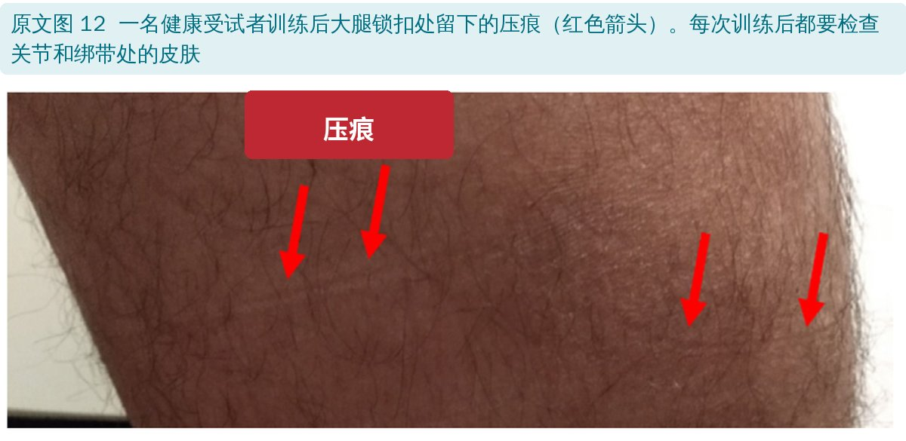
🔖原文图 12：大腿锁扣处的压痕
• 每次训练后检查皮肤压痕，最常见在关节处和绑带、锁扣处；教会患者和家属自查
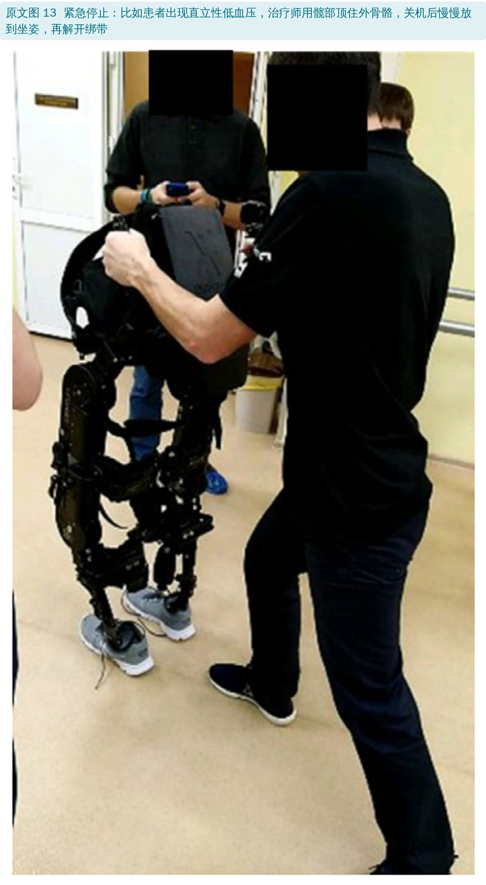
🔖原文图 13：紧急停止
• 紧急停止：原因可能来自患者（如直立性低血压）、机器、治疗师或环境。治疗师用髋部顶住外骨骼，关机（避免关节锁死），慢慢放到地上的坐姿，再解开绑带
• 肌肉痉挛或患者主动对抗外骨骼：大多数外骨骼的力传感器能检测到并停止程序，但治疗师仍要扶住外骨骼；之后可以重启，或放到坐姿松开绑带
• 同步记录脑电：先让患者穿着走几步确认没问题，再坐下戴电极帽、上导电膏（15～30 分钟）；笔记本用电池供电并远离外骨骼电池，减少干扰
• 开门：见下图
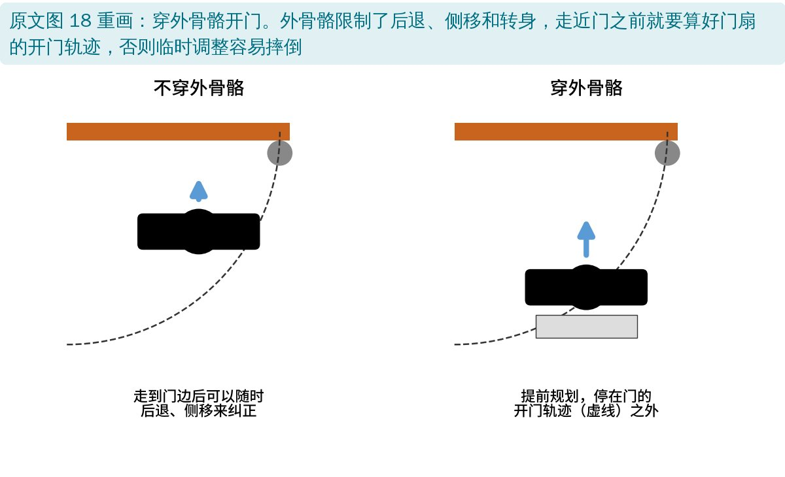
🔖原文图 18：穿外骨骼开门要提前规划
健康受试者（原文表 2，3 次训练）：
| 第 1 次 | 第 2 次 | 第 3 次 | |
|---|---|---|---|
| 站立时间（分钟） | 5 | 15 | 20 |
| 转移重心 | 做了 | 做了 | 做了 |
| 原地踏步（步） | 5 | 10 | 10 |
| 行走（步） | 0 | 30 | 50 |
| 焦虑自评（1～10） | 10 | 8 | 5 |
| 不适自评（1～10） | 10 | 6 | 5 |
| 治疗师之外的支撑 | 治疗师在前 | 治疗师在前 | 拐杖 |
| 其他监测 | 无 | 无 | 脑电 |
原文表 2：健康受试者前 3 次使用外骨骼的变化（中文翻译）
第 1 次焦虑和不适都是满分 10 分，训练被迫中断；第 3 次降到 5 分，能用拐杖走 50 步，只需要一名治疗师。第 3 次同步记录的脑电显示，外骨骼开机不干扰脑电信号，行走主要伴随 10 Hz 频段功率升高。
脊髓损伤患者：21 岁男性，胸 5～7 骨折，ASIA A 级（完全性损伤），伤后 2 年开始用外骨骼。
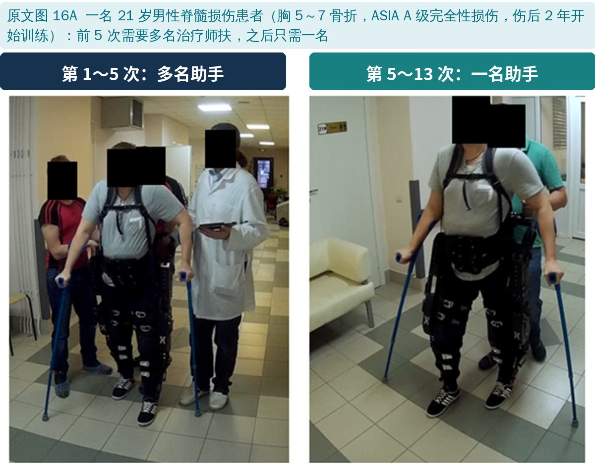
🔖原文图 16A：从多名助手到一名助手
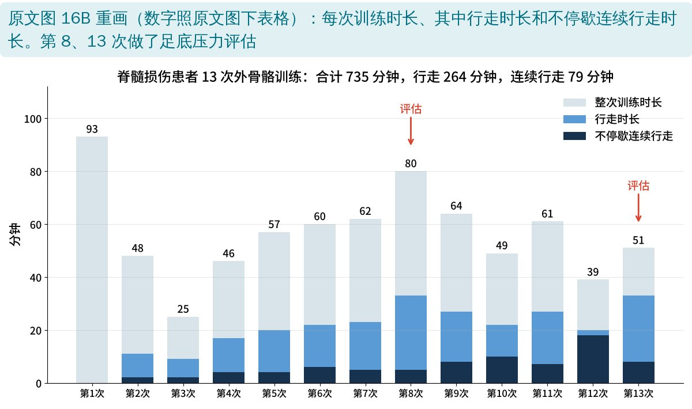
🔖原文图 16B 重画：13 次训练的时长
13 次训练合计 735 分钟，其中行走 264 分钟、不停歇连续行走 79 分钟；前 5 次需要多名治疗师，之后只需一名。足底压力显示，第 13 次比第 8 次脚底（尤其左足跟）承重面积更大。
• 这是操作方法，不是疗效研究：只有 1 名健康人和 1 名患者的示范数据，不能说明外骨骼训练能改善步行或神经功能
• 基于一个品牌：体型限制、坐姿模式延迟、爬楼参数等都是 ExoAtlet 的，换别的外骨骼要以厂家说明书为准；作者也强调了这一点
• 利益相关：致谢里写了 Exoatlet Global S.A.（卢森堡）给予了资助，竞争利益声明却写“没有已知的竞争性经济利益”
• 实用价值高：从量体、绑带松紧、治疗师站位、3 点着地原则、用髋转移重心到皮肤检查，都是临床上容易忽视但真正决定安全的细节
• 利益声明矛盾：致谢列了外骨骼厂商 Exoatlet Global S.A. 的资助，竞争利益声明却写没有
• 模板没删：规格表里“原始方法”和“资源可用性”两栏还留着期刊模板的提示语（“If applicable, include…”）；学科领域填的是“心理学”
• 图 16 柱状图和表格不一致：第 1 次训练表格写 93 分钟、柱子画到约 95；表格写第 1 次行走 0 分钟，柱子底部却有一小段连续行走
• 图 11 箭头颜色：图注说“红色箭头”，图中实际是橙色
• 表 1 频次：“穿外骨骼”和“站起”两步的频次写“每次训练 2～3 次”，正文没有解释为什么要穿 2～3 次
• 脊髓损伤平面写法：骨折写“Th5-7”，脊髓损伤写“D4”，混用了两种胸椎记法；“Motor – 1”含义不清
• 小错：“airline fracture”（应为 hairline，细微骨折）；表 1 “confortable”“weelchair”等拼写错误
• 安全比步数重要：早期至少 2 名治疗师，一人在后防后倒；外骨骼抬脚时治疗师双脚着地
• 每次站起都要看血压和焦虑：直立性低血压是最常见的中断原因，第一次能站 5 分钟就算成功
• 绑带松紧＝一根手指，大腿后侧要贴合支撑，训练后查皮肤，尤其感觉缺失的患者
• 循序渐进：转移重心 → 分步踏步 → 自动间隔 1～2 秒 → 连续行走 → 楼梯和开门等环境任务
• 治疗师自己先空载演练所有步骤，再上患者；具体参数以所用外骨骼的说明书为准
欢迎关注骨科康复小黄公众号，获取更多物理治疗的专业知识！
📄参考文献：
Pais-Vieira C, Allahdad M, Neves-Amado J, Perrotta A, Morya E, Moioli R, Shapkova E, Pais-Vieira M. Method for positioning and rehabilitation training with the ExoAtlet® powered exoskeleton. MethodsX. 2020;7:100849. doi:10.1016/j.mex.2020.100849
原文以 CC BY 4.0 协议开放获取，版权归原作者所有。本文为学术交流中文解读：原文图 1～13、16A 引自原文，图中中文标签为编者所加；流程卡由编者整理，图 16B 和图 18 由编者根据原文用中文重画，表格为中文翻译。仅供学习交流，如有侵权请联系删除。